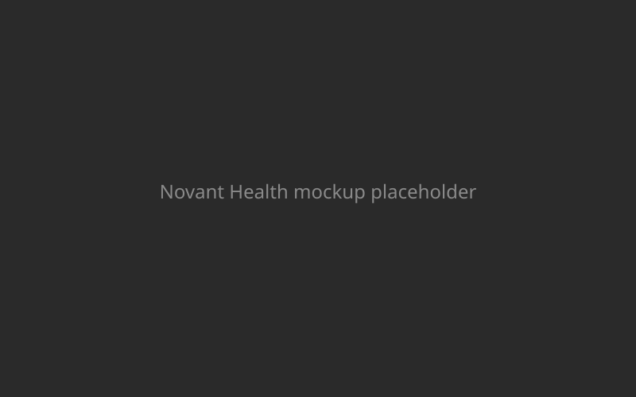

Novant Health · Done in Figma
System-Wide Website Redesign
The aim of this project was to improve how patients access care online across Novant Health's digital ecosystem. The project goal was to simplify key flows—like scheduling and provider search—while improving accessibility and scalability.
As part of the UX team, I redesigned key sections of Novant Health's website to improve appointment scheduling, care access, and overall usability, especially for mobile users. I worked closely with developers and stakeholders to test prototypes and roll out components in a phased release.
Helped reduce drop-offs in online scheduling by simplifying key paths and improving mobile UX
Praised for creating a modular, reusable system that accelerated rollout across multiple departments
- 01
UX Audit
Reviewed data and identified user pain points
- 02
Team Alignment
Facilitated design priorities across departments
- 03
Journey Mapping
Focused on care search and scheduling flows
- 04
Accessibility Design
Ensured WCAG compliance from the start
- 05
Modular UI
Built scalable, dev-ready design components
- 06
QA & Rollout
Tested live environments and supported implementation